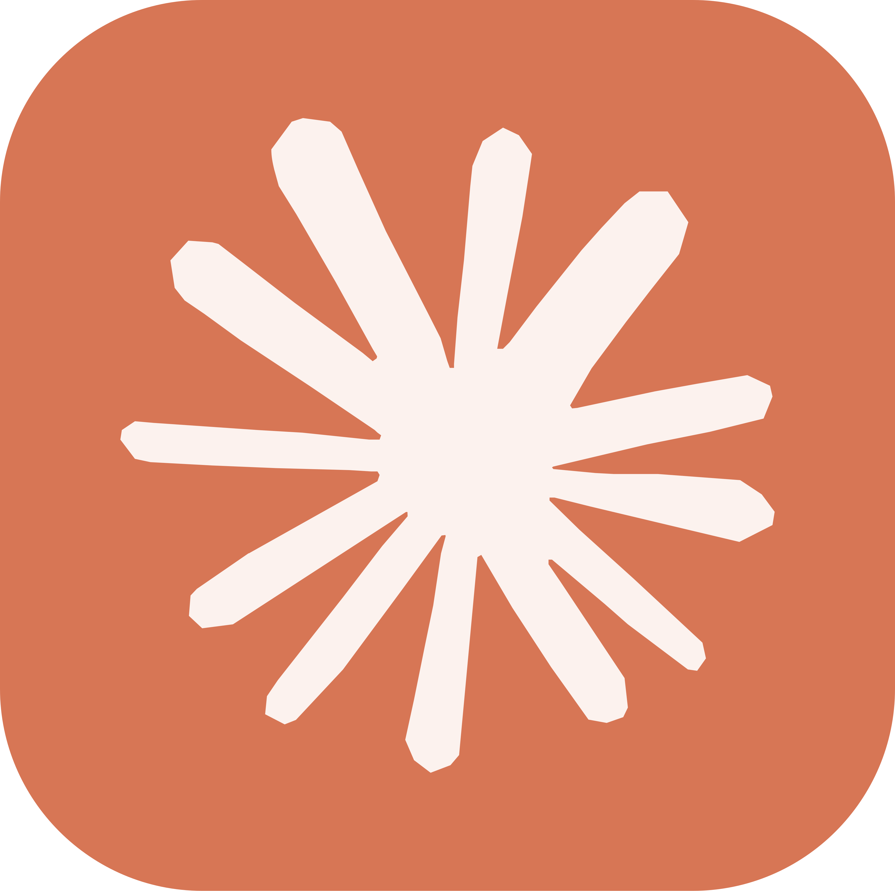
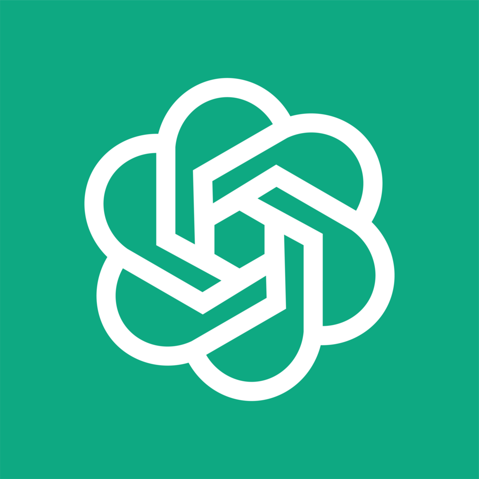
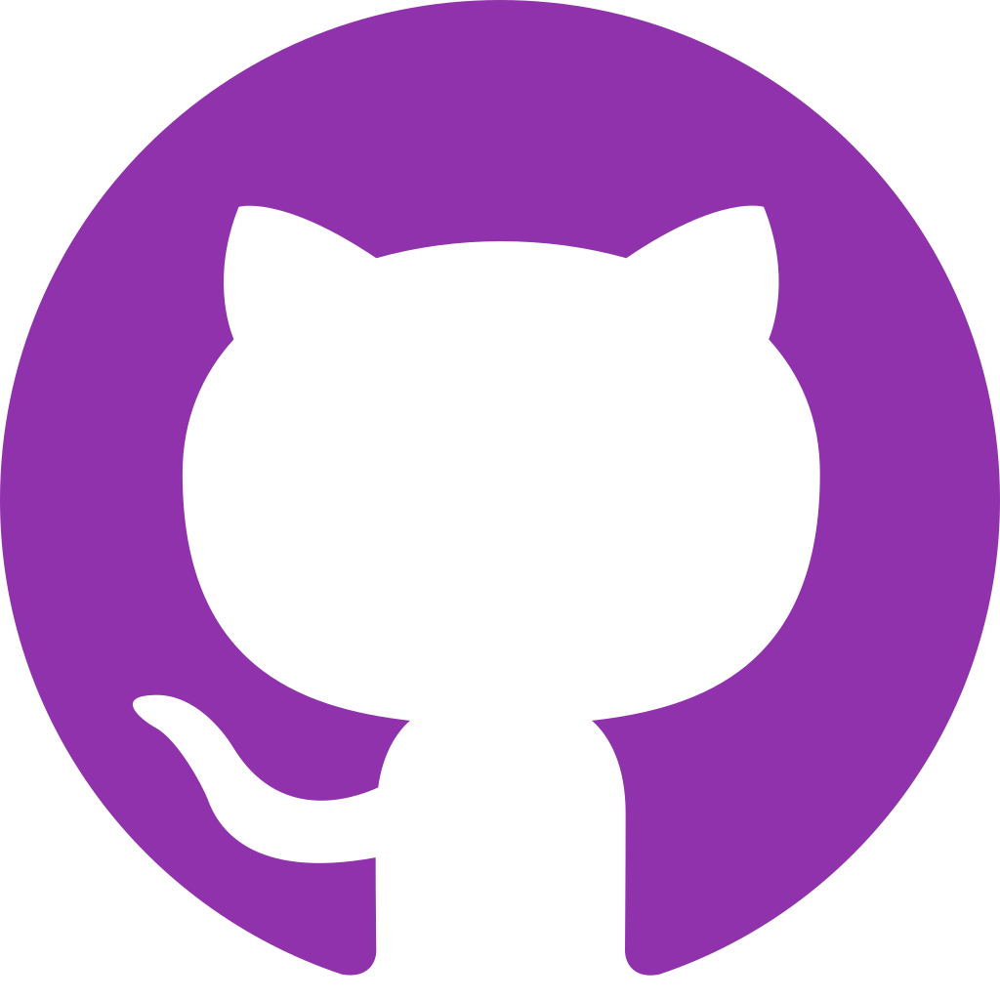
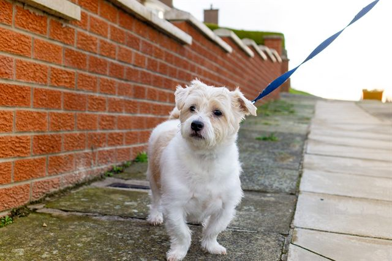
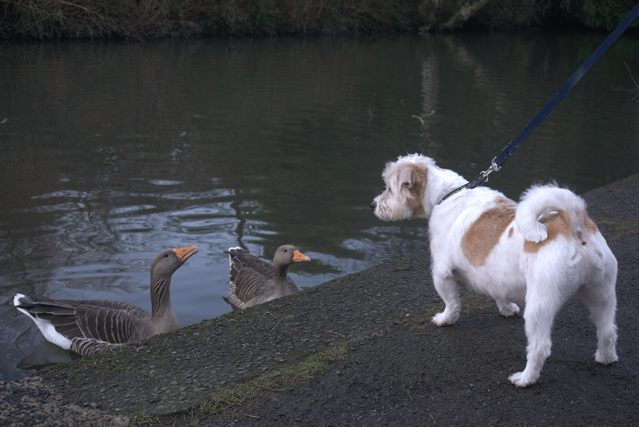
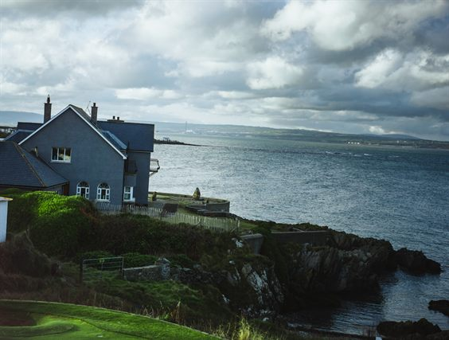

Jacob Thompson
I design user experiences with a particular focus on accessibility. Based in Northern Ireland!





Portfolio
A few case studies that demonstrate my design process from defining a problem to iterative testing:
About me
Hi, I'm Jacob! I'm a UX designer based in Northern Ireland with a mission to make design more accessible for all. I am very familiar with the UX design process from defining an idea/problem to solve, conducting research, creating prototypes and gathering feedback from iterative testing. My favorite aspect is accessibility as I believe it can be frequently overlooked in the design process, and I want to change that. That is my mission!
Outside the world of UX and 'vibecoding' in Cursor, I am a big believer in the power of a good reset. For me, that looks like capturing Northern Ireland through photography, getting lost in a Tame Impala record, or most importantly spending quality time with my dog, Benji. I find that the best design ideas usually appear to me when I'm furthest from the screen!



Contact
Get in touch!